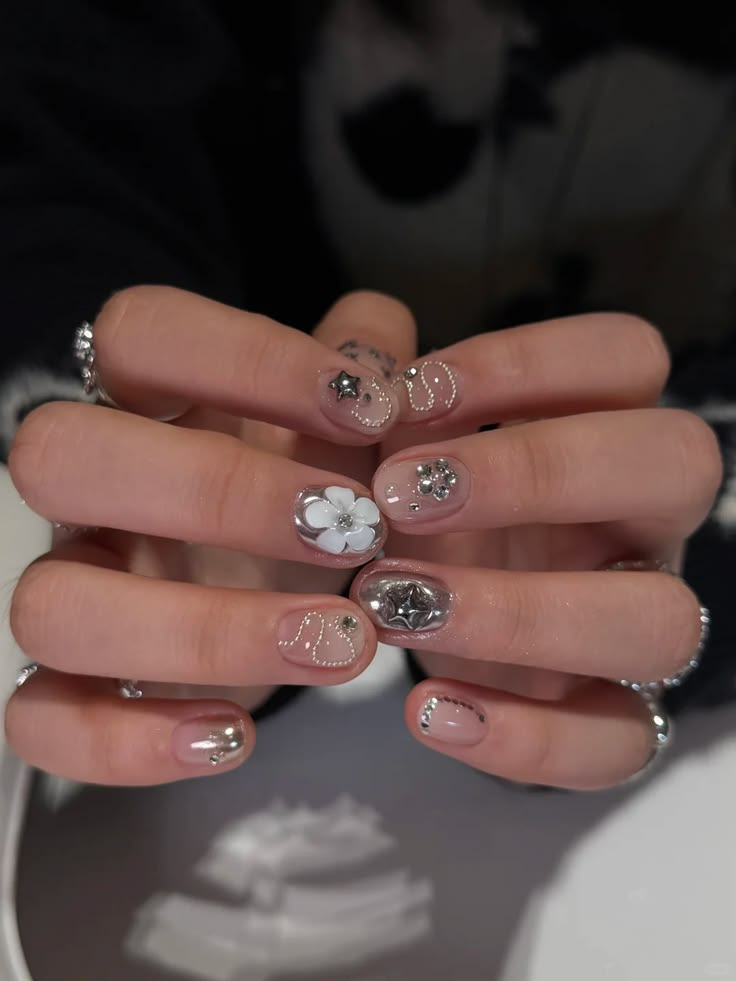
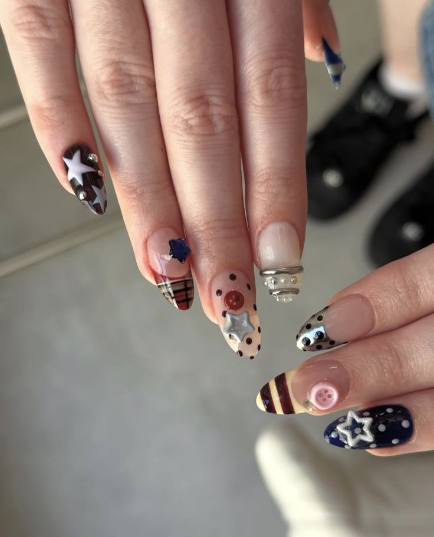
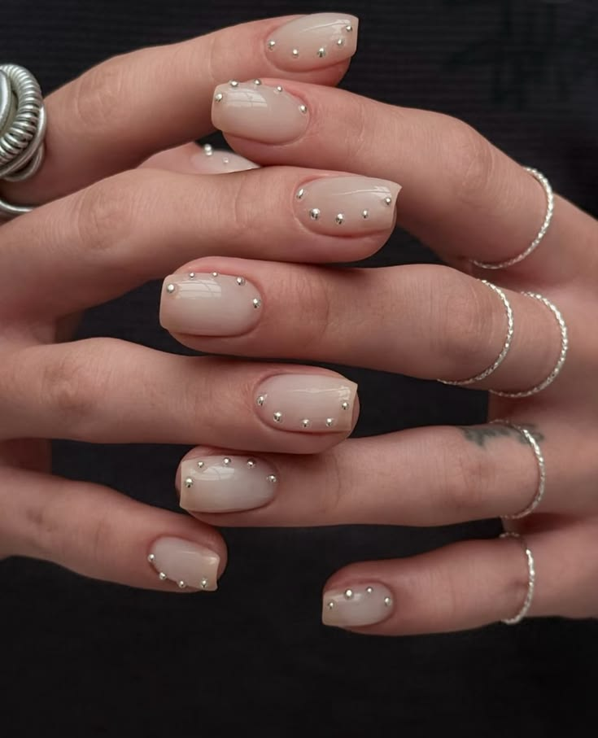

Gel polish has completely transformed the beauty industry, becoming the standard for long-lasting manicures. Unlike traditional nail lacquer, gel polish for gel nails offers durability, shine, and chip resistance that clients and nail professionals love. Today, both DIY gel nail lovers and professional nail salons rely on gel polish as the ultimate nail enhancement.



When I am doing my nails, I feel like I am meditating. It's like a sacred ritual that I do every month. Of course, my nail beds have gotten pretty thin after doing my nails for a few years, but honestly, I don't care. I love doing my nails. I love having different nails every month. It's fun, it lifts my mood, and it gives me a new personality every month.